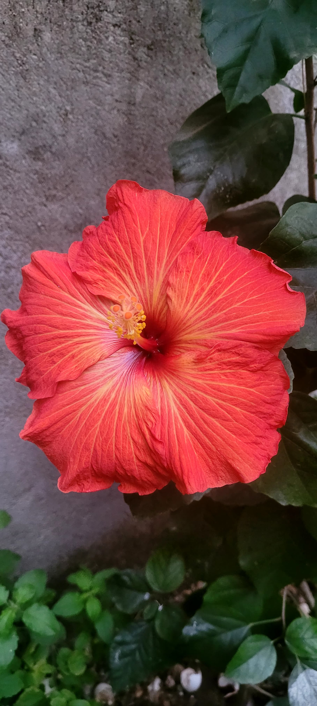

Popular summer flowers

Madhobilata
It's called Madhobilata.
Which is so Popular know as it's amaizing fraigrance.
it mainly comes out in start of Summer.
its fragrance can beat any costly perfeums.

Red Joba
Red Hibiscus is a vibrant tropical flower widely
cherished for its deep crimson hue
and classic five-petal design.
It features a prominent central stamen that attracts bees,
butterflies, and hummingbirds to the garden.
In Bengali culture, this flower holds immense spiritual value
and is traditionally used in religious worship.
The plant thrives in warm climates and blooms continuously
throughout the summer and monsoon seasons.

Yellow Jaba
It's called Madhobilata.
Which is so Popular know as it's amaizing fraigrance.
it mainly comes out in start of Summer.
its fragrance can beat any costly perfeums.